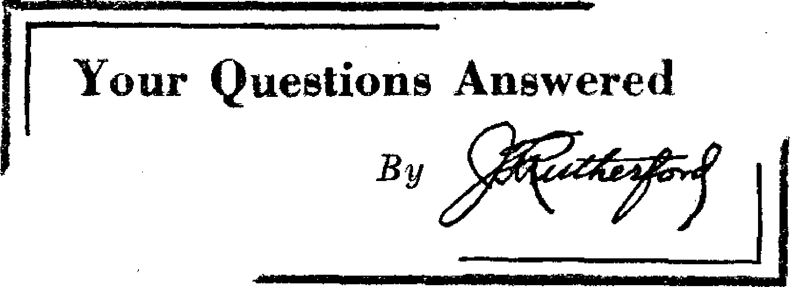
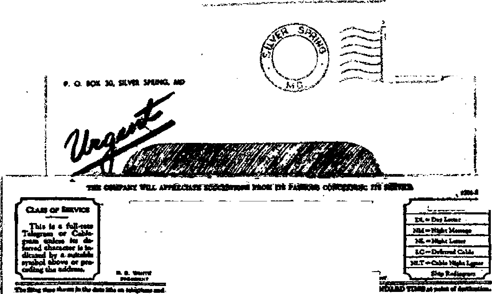
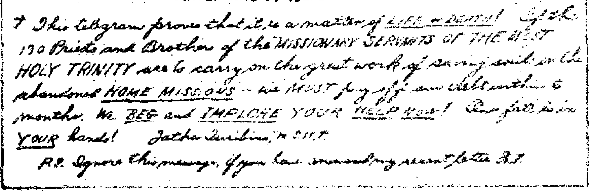
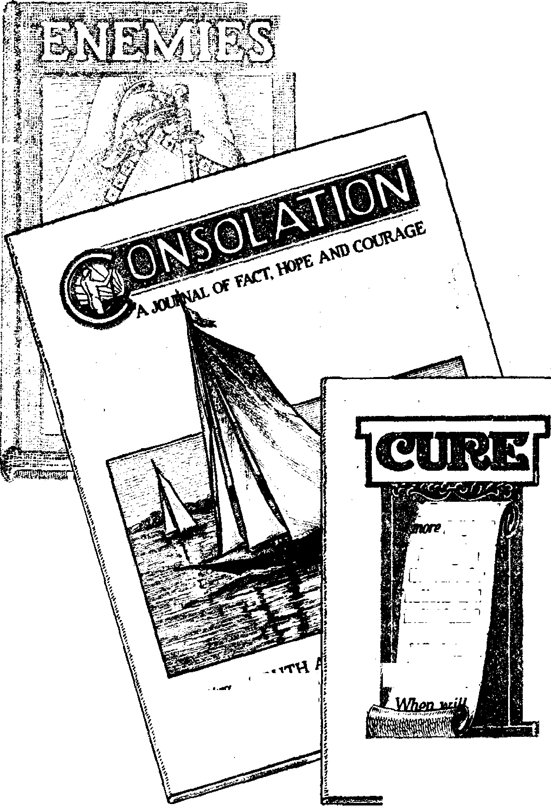

1938
Consolation
Magazine
Contents
Appetizers
West Indies and Central America
Your Questions Answered
Letter from a Commercial Traveler
By Trail and Stream and
Maple Sap—Cover Design for This Number 31
Published every other Wednesday by
THE GOLDEN AGE PUBLISHING COMPANY, INC. 117 Adams St., Brooklyn, N. Y., U. S. A.
President Clayton J. Woodworth
Vice-President Nathan H. Knorr
Secretary and Treasurer Charles E. Wagner
Five Cents a Copy
$1 a year in the United States 11.25 to Canada and all other countries
NOTICE TO SUBSCRIBERS
Remittances: For your own safety, remit by postal or express money order. When coin or currency is lost in the ordinary mails, there is no redress. Remittances from countries other than those named below may be made to the Brooklyn office, but only by International postal money order.
Receipt of a new or renewal subscription will be acknowledged only when requested. Notice of Expiration is sent with the journal one month before subscription expires. Please renew promptly to avoid loss of copies. Send change of address direct to us rather than to the post office. Your request should reach us at least two weeks before the date of issue with which it is to take effect. Send your old as well as the new address. Copies will not be forwarded by the post office to your new address unless extra postage is provided by you.
Published also in Bohemian, Danish, Dutch, Finnish, French, German, Greek, Japanese, Norwegian, Polish, Spanish, Swedish.
OFFICES FOR OTHER COUNTRIES
England 34 Craven Terrace, London, W. 2
Canada 40 Irwin Avenue, Toronto 5, Ontario Australia 7 Beresford Road, Strathfield, N.S.W.
South Africa 623 Boston House, Cape Town Entered as second-class matter at Brooklyn, N. Y., under the Act of March 3, 1879.
YOU wouldn’t think that a mere skull, with all the flesh removed, would put up a squawk for holy water. Or maybe you would. It all depends on how much ‘6 faith ’ ’ you have. Anyway, here is this from the Cathedral Calendar, Eighteenth and Race Streets, Philadelphia, Pa., Volume 4, Number 10:
The venerable Dominicus A. Jesu had, as it was customary with the Carmelite Order, the skull of a dead upon his table. It came to pass that as Father Dominicus sprinkled it with Holy Water, it addressed him and exclaimed most piteously: “More Holy Water,” for it has greatly lessened the violent heat of the tremendously painful fires of Purgatory.
There is a chance here for bright inventors. One idea would be to fit up every Carmelite prison with a holy tank and let some priest bless all the water in the tank. Then, every night, all the skulls in the dump could be put in the tank, and in that way they could get out of the heat during the hours they want to sleep. A good, courageous, nervy skull ought not to hesitate to hop back into the oven in the morning, provided he had a good rest the night previous.
The thing is a trifle complicated, however. Here is a skull of some egg that tries to make out he is in the heat when, as a matter of fact, he is on a table or desk or buffet in a Carmelite monastery. That sounds fishy. Of course, it may be argued that only the lips and tongue and other fleshy parts are in the heat, while the skull itself is elsewhere. But if that is the case, why did not the skull open wide open and tell the truth, admitting that it itself was having a good-enough time, but it was the former tenants that were having it tough. And if that is true, what good would it do to souse the skull with much “Holy Water” or any at all ? To tell the truth, it looks very much as if this skull had told a whale of a lie, and got the Cathedral Calendar to publish it, in the hope of separating some poor sucker from some more of his long green.
♦ Hatching an idea, somebody suggested that many a man who was egged on to matrimony is now groaning beneath the yoke.
CONSOLATION
“And in His name shall the nations hope.”—Matthew 12:21, A.R.V.
Volume XIX Brooklyn, N. Y., Wednesday, March 23, 1938 Number 483
THE mind of Jehovah works not like the minds of His creatures. As His ways are higher and more wonderful and wise than their ways, so are His thoughts above their thoughts; and His methods of expressing those thoughts are higher, too, because of the greater means at His command.
Where is the man capable of thinking intelligently upon several different subjects at the same time? What creature could read a newspaper, write a letter, discuss a technical subject, and in another language meditate upon a philosophical matter? all with equal efficiency? Yet the Lord thinks upon many millions of things at the same time without confusion, without fatigue or forgetfulness, and with flawless accuracy.
Who can comprehend a mind like that? or say to Him “What doest thou?” Fools and devils may presume; but the reverent mind is awed and humble before such majesty, meekly attentive upon His every utterance, and eager to learn whatever the divine purpose may reveal. The Word of God records the lives of some such—humble creatures who served Jehovah in time past expressing the Creator’s purpose pertaining to the vindication of His name, together with associated and incidental matters. Of such servants of the Most High it is said that they will receive “a better resurrection”.
Passing over the philosophy of the resurrection and its associated subjects, let us consider the matter of Jehovah’s memory—the memory that never forgets, and upon which all resurrection depends. When Jesus spoke of the resurrection in John 5 He used a word (p,vr||X8LOv) which, fully translated, means the “memory of God”. That means, surely, that those who have fallen asleep in death are nonexistent apart from Jehovah’s memory of them—His recorded details of their individuality.
Let us probe this point. What does it mean to ‘‘remember ’ ’ a dead person ? To us it means, of course, that we have recollections of scenes in our own lives in which the dead took part. So far as their “character” is concerned we know, too, something of that, and can recall the manner of life of our friends or associates, knowing their reactions of thought, conscience and conduct to given moral considerations. But here we stop!
We can recall no more than was implanted upon our own senses by contact with those now dead. How impossible for us to resurrect anyone! Suppose we could construct a human body out of the dust. What of the countless nerve-responses present in the brain at the time of death? How may these be restored? How could the brain cells we have made (?) be given the impressions that would enable it to recall past scenes and events, old associations and experiences, as well as the deep hopes, loves or hates developed in the mind we wish to restore. But God remembers all, and can restore all at will.
How puny we are! A wonderful work indeed is man, but limited to his own sphere and purpose. Think of the wisdom and power used to refresh the brain that rotted in the body of the “stinking” Lazarus four days dead, and made him, at the Lord’s command, come forth no worse for his gruesome experience than if he had had but an hour’s nap!
But—we may ask—how does Jehovah remember so many details of each individual life ? How was the angel able to use the power committed to him in such a way that not an iota of the memory of Lazarus was omitted? For if one is to be resurrected his whole previous life must be restored to him, which constitutes his memory. And to do that, Jehovah himself must remember the memory of every creature that has ever lived! How is it possible ?
With man it is not possible; with the Lord it is a simple thing. Just the exact and actual means used to card-index the complex brainimpressions which go to make up a human creature, it is impossible for anyone yet to say; but we can, even now, upon the basis of what is known and done by man, reason upon the facilities in the hand of Jehovah to preserve a creature’s identity after death.
Could you conceive of a photograph’s being taken by an ordinary camera in a pitch-dark room? Yet that is done; for what we call darkness is any condition in which we are unable to see for lack of light. But, strange as it sounds, there are lights we cannot see! Such lights are nevertheless broad daylight to certain very sensitive chemicals on special camera-plates; so that, in a room flooded with infra-red light a portrait may be taken of a person who, at the same time, cannot see a thing in the room. Is that not wonderful? Thieves have thus been detected in the act of opening a safe. Such things seem impossible until the means are understood. Even so with the resurrection.
Now, to illustrate: the preservation of identity. Suppose a businessman finds it necessary to leave his home for a year or two on a business trip across the world. He has a passion for the culture of rare plants, and is interested in a certain exotic growth of which he wishes to make a careful study. Being resourceful, he provides a corner of the hothouse where the noonday light will play regularly upon the plant. In front of the pot is placed a movie-camera, specially devised so that it will snap one tiny picture each day at the stroke of noon. The seedling is planted, a servant instructed to water and otherwise care for the rare specimen, and the businessman sails for distant parts, knowing that in his absence the contrivance he has arranged (and which, remember, will operate by laws determined by Jehovah) will faithfully record the daily progress of his precious plant.
Two years later, the trip over, and the plant having grown, withered, and died, he develops the film, and there, in full life before him (and much magnified if need be), is portrayed upon the screen the plant he has never seen but in which he is so interested. Indeed, the secondhand, magnified version on the screen may be more useful for his purpose than the actual slowly-growing plant itself. Is not this also wonderful? '
You will see, now, how very simple it must be for Jehovah to keep an automatic check on a creature’s movements, and on the movements of his brain, his thoughts, his memory. It is possible for the record of man’s life from birth to death to be preserved by talkie film, his every movement and his every utterance; but what creature would be worth the colossal expense involved? Yet Jehovah has done that, and more, not alone of any one creature, but of twenty thousand million of them; and more than that, the memories of these millions are likewise retained in His memory by ways far superior to the ways of man, with means that reduce these mentioned wonders to mere trifles.
And what is the memory of God? It is the means by which such preservation is accomplished. Whether His own great mind retains such countless details or whether they are held in the minds of trusted angels or by some automatic equivalent of mechanical means matters not; the fact is all-important. As the film in the plant-illustration retained what its master desired, without the least effort to him, so, without the least effort or fatigue to Jehovah, do the means He employs obey His commands and accomplish His purposes.
And when the resurrection has become a reality, when millions have returned from the grave and sit at the feet of Jehovah’s King to be taught by Him in the ways of God, what means will Jehovah use to teach them? Will they read books, the Bible, etc.? They could, but there may be better ways, suited to the changed times and conditions. Since God can reproduce the memory of Abraham for Abraham’s use, can He not reproduce, on screens, for the edification of the many millions who will then thirst for a knowledge of Jehovah’s dealings with man during the last six thousand years, the scenes in which Abraham participated when he made moving-pictures directed by Jehovah? But there are some whom Jehovah will forget. They, having proved their incorrigible selfishness, will be destroyed, not only in body as people die now, but will be destroyed both “body and soul in Gehenna”. For such there will be no resurrection; for, since Jehovah himself will forget, since He himself will destroy from His own mind or that of His agents the only means whereby they could be resurrected, they will become as though they had never been, forgotten through all eternity.
Think upon the possibilities—and as you think your thoughts are being recorded by the same power that filed for future reference the identity of Abraham; and realize if you can, more fully still, how high Jehovah’s ways are above our own, how wise His purposes, how deep and inscrutable His majestic thoughts —not of the kind that man thinks, but which, expressed, give to mankind his chief delight in living.—Percy A. Williams, Australia.
(Judge Rutherford will attend in person the convention of Jehovah’s witnesses at Sydney, Australia, April 22-25, 1938)
♦ I would like to point out that there are very sound reasons for a belief that popes are not infallible. Take the papal attitude to astronomy, for instance, when that science was in its infancy, hundreds of years ago. Acting under alleged spiritual guidance the popes held certain convictions concerning the movements of the sun and planets, and the students who differed from the church’s belief were, I understand, punished and tortured. In modern times every Catholic priest with whom I have come in contact holds precisely the same views with reference to the sun and planets as the students of long ago who were denounced as Godless in those times. Now if the popes of those days were in spiritual touch with the divine Lord, why didn’t He choose to make the information available through them, instead of a Godless medium? Another instance in more recent years is that of the Italian airman who tried to fly to the North Pole. He carried a small Italian flag on which the present pope had bestowed a special blessing. However, the pope’s blessing didn’t cut much ice, as the airman crashed in the snow and was very pleased to be rescued by an airman from the so-called Godless nation of Russia.—H. Tilmouth, Australia, in Barrier Daily Truth.
♦ Australia’s 500-pound clams, Tridacna gig as, sometimes grow to be fourteen feet long. This so-called “giant clam” lies on its back in the bottom of a coral pool, with its huge jaws open, feeding on organisms of any kind that come its way. When the jaws snap it is sure death to anything caught between them. Many a pearl diver has thus lost his life. A 500-pound clam may contain as much as 25 pounds of edible flesh. The shells are in demand because of their striking colors.
♦ Air surveys of Australia are progressing, as in most other civilized lands, and are resulting in the correcting of existing maps. Lakes were found where they were not known to exist. Beacons for night flying are being installed. One at Melbourne has 1,500,000 candle-power.
♦ In the state of Victoria the law requires all landholders to begin a systematic campaign of destruction of rabbits in the month of February each year, when the weather is very hot and dry. This destruction is supervised more or less by Government inspectors, and in some cases is very effective. Where this work is carried out thoroughly, the great bulk of the rabbits are destroyed at a time when the skins are of little commercial value. Due to the hot weather generally experienced at that time of the year, only a small percentage of carcasses are sent to the freezing works, all others being vested.
When rabbits are attacked on unnetted country they clear out, much to the annoyance of adjoining farmers whose lands are invaded. On occasions when the rabbits are extra plentiful the poison bait is often used. I Have known of instances where they have been gathered up into heaps of hundreds after poisoning, and allowed to rot, being of no use to anybody. Other countless numbers are killed in their burrows and warrens by means of fumigators, and are left there to rot.
This waste occurs in all the states of Australia, and takes place after the pastures, etc., have been partially spoiled. Under different management the rabbit pest would not be nearly so bad, perhaps might not be a pest at all. But what can one expect from Satan’s old ‘order’? Confusion, trouble, waste, etc.— A. S. Faulkner, ikustralia., ,
♦ Eleven o’clock at night and “holiday season” in New South Wales, Australia*
Four hundred cars lined up in an orderly queue, waiting their turn to cross “Peat’s Ferry” over the beautiful Hawkesbury river.
A J.w. sound car, the occupants tired after a thrilling week-end of service in the “King of King’s” campaign, takes its place in the queue. Two miles of ears, most of them visible, the sound car on top of the hill, and a calm, lovely night. Then comes the voice of one J.w.: “Boy! What a chance to give them a blast! How about it ? ” A grunt from the back of the car as one J.w. commences to rub the sleep from his eyes after hearing talk of activity. *‘Sure thing,’5 says the driver; “let’s clear the deck for action.”
All occupants of the car immediately spring to action. Luggage is shifted to different parts of the car; No. 3 horn (which incidentally was used as a spare luggage carrier on the roof) is swung into position. Six-volt battery, No. 3, P.T.M., are all linked together. Microphone is attached and needle flicked. “O.K., boys; let them have it.”
“This is a Watch Tower sound car operating in this district to bring you a message of good cheer. As you wait for the ferry we shall , be pleased to present to you a program of musical items, together with instructive talks by Judge Rutherford [somebody near by claps], who is a recognized authority on Bible prophecy and world events. We invite your careful attention.”
Down the hills and through the valley, echoing against the rise three miles away, the beautiful notes of “Humoresque” are heard. As the last note dies away motor horns are blown, voices are heard crying for “more”, all showing the listeners’ appreciation. Another short announcement introducing JFR, and then a short Bible lecture. In this manner the people are instructed. Surely the angels are enjoying it, too.
An hour has passed, during which time we have played four five-minute lectures byJudge Rutherford and the truth contained therein thundered through the district, and as the echo rolled down the hillside it was a veritable avalanche of truth. What an hour! 400 cars, averaging four occupants; 1600 listeners. Sixteen hundred listeners, spoken to in a clear and convincing manner, with no previous preparation apart from having the equipment on the spot. Imagine the advertising and preparation necessary before 1600 people would be induced to enter a lecture hall to hear the truth!
Over the “mike” comes a concluding announcement: “From time to time Jehovah’s witnesses call at your homes with Bibles and books explaining the Bible. When they do so, treat them kindly; listen carefully to what they have to say. Remember, Jehovah’s witnesses are your friends.” Continuing, the announcer tells the people that the program will have to conclude, as the battery is running low. Immediately from the darkness down the road come the voices, “Keep her going, mate; we have a spare six-volt here,” and, 4 £ Keep her going; we will tow you home if you are stuck. ’ ’ Others come up to the car and thank us for the program, asking us if we will kindly put on another Watch Tower quartet after a “talk”. This we gladly do. Another party is so pleased they bring cakes and home cookies as an appreciative gesture for the spiritual food given. They gladly take the literature, loving the message of God’s kingdom. But wait; the lecture “Fathers” is heard. “Why are the Roman Catholic priests called‘ fathers ’ ? ” are the opening words. Then one lone car bleats a plaintive wail with its horn in a futile effort to drown the No. 3. No, sonny; you might as well try to sweep back the ocean with a broom. Somebody asks for “cooties powder”, but none is available. How the £ £ old woman’s hide ’ ’ is being tanned! All praise to Jehovah for these hard-hitting truths so timely given, and may we be privileged to continue our service to Him day and night. —Heg, Australia.
♦ By the new biweekly service between San Francisco and Auckland it takes but four days to fly from San Francisco to New Zealand. The first day spans the 2,400 miles to Hawaii; the second, the 1,067 miles to Kingman’s Reef; the third, the 1,546 miles to Pago Pago, in the Samoas; and the fourth, the 1,797 miles to Auckland. Then the Imperial Airways take up the load and carry it to Sydney, Australia, and so on to England, and, shortly, across the Atlantic and back to New York and San Francisco. A choice of several air routes around the world will shortly be offered, and any one of them can be completed within a two weeks’ vacation.
♦We should ask the Government to throw wide open the nunneries to public inspection. If an ordinary civilian is suspected of filching a reel of cotton—of beating his wife—of hiding unlicensed firearms, or of anything against the law—then his house is open, and his office, to inspection by the police. Did you but bury your dead without notifying the authorities, then great would be the punishment and outcries. Yet scattered amidst us, hidden behind towering walls and ever-locked and guarded gates, are vast nunneries. What have they to hide that needs closer locking than a bank ? What fear these religious daugh-*■ ters who, without property, have given themselves to closed walls for life ? Why cannot the candle of their good works shine before men? No, no police invade those portals, no record is known of its inmates, of births or deaths. Did I say births? Too many of these Brides of Christ have escaped for us to longer be blinded. Sisters—we know—we know—but not for us to trample longer in the mire; let our votes see to that.—Protestant Truth Centre, Melbourne, Australia.
♦ While writing of hotelkeepers, I was reminded of a story I heard the other day concerning Mr. Charles Bernhardt, who has the hotel at William Creek. He is a Jehovah’s witness and will discuss his beliefs all day and every day. He issues propaganda to his guests.
The story has it that Mr. Royle, an inspector of aerodromes, grew weary of listening to the hotelkeeper and decided to embark on an argument with him on religion. They got very heated. Finally Mr. Bernhardt went to a gramophone and put on a record of an address by Judge Rutherford to give weight to his statements.
“That finished it,” said Mr. Royle, “one cannot argue with a gramophone record.”— Adelaide (Australia) Sun.
♦ Australia’s new board of censors are Dr. L. H. Allen, Prof. J. S. M. Haydon, and Mr. Kenneth Binns, librarian. These gentlemen have the sole responsibility of determining what books their fellow Australians may be permitted to read. The board deals only with imported literature.
♦ Advertising its so-called “Annuity Agreement” in The Annals of Our Lady of the Sacred Heart, Sydney, Australia, the Society of the Missionaries of the Sacred Heart of Jesus says there is no risk in sending your money to them. They explain that a high rate of interest is paid, sometimes as high as eight percent, and that when you die the money you have donated is used “in the interests of the faith”. The principal point in this is that the money you send them may or may not earn something, and this all depends on how they figure. If it earns anything you may get something. But the real point is that there is “No Risk” to the monastery. Whatever happens, they get your money in the first place, and keep it for ever. Just like pulling a stick of candy away from a baby.
*
Northern Australia
♦ In twenty-five years, and at an expenditure of $3,000,000 a year, the entire population growth of Northern Australia was but 80 persons per year, and the grand total is but 23,000, counting all noses, whites and natives. A report recently made calculates that by quadrupling the expenditure the province may make an annual gain in population of 680 for twenty-five years. However, the geographical location is so important to Britain that the necessary funds will probably be forthcoming, together with enough more to build a railroad connectipg up with the other Australian lines. This very scattered territory was thoroughly covered by Jehovah’s witnesses recently.
♦ Professor Frederic Wood Jones, retiring professor of anatomy, Melbourne University, in a farewell address before the Victorian Anthropological Society, claimed that when the whites arrived in Australia there were 300,000 aborigines living happily and healthily, while today there are fewer than 50,000, with twice as many half-castes living miserably.
♦ Farmers of Java use automobile tires to protect the feet of their oxen from stony roads. The old truck tires are preferred, because they are thicker and stand the hard usage longer.
SOME time ago I had a very amus-experience with a big, fat, bur-ly priest. As I live near a big air-Cdrome, I get a good many chances * xz JT■** ? to give out some of our booklets and
Watch Tower literature to the large crowds that rush to see a human roasting stunt when planes come down in flames or crash. On this occasion I was giving out a few “Of What Are the Devil’s Clergy Afraid?” and “Is Hell Hot?” I struck the above-mentioned queer guy with collar on backwards, and handed copies to him. He said quite a heap of foreign stuff to me, and ruffled the papers up and threw them madly to the ground. My wife said, “Dad, he has cursed you. He is a priest. ’ ’
Now, here is the rub: Our 1,400 white Leghorn hens were in the midst of a very severe molt, and we were getting about one hundred eggs per day. Things were anything but bright with us. Immediately the curse was sworn against us the birds jumped up to almost eight hundred eggs per day within a few days. In all the twenty-five years in the poultry business I never experienced such a rapid change in our birds as this one.
We were about £60 in debt for fowl food on the day of the curse. But just about one month after, that bill and many others were paid. I now wish-1 had struck an R. C. priest before with the “Is Hell Hot?” and “Of What Are the Devil’s Clergy Afraid ? ’ ’ Jehovah God is not forgetting us. I also have a sandpit from which I have sold about £12 worth more of sand than previously. In view of this we paid £6 14s. for a phonograph and 21 records but yesterday. With this outfit I hope to enjoy more curses.-r-A. 0. Thompson, Australia.
♦ Australian Catholics have been making a great demand for state support of schools of the Catholic sect, and it is being met firmly with refusal, because this method was once tried in Australia and found to be a great failure. It led to constant bickering, fostered sectarian bitterness, increased taxation, diminished efficiency in education, and if renewed would allow one-fifth of the community to impose its will on four-fifths and surrender the sovereignty of the state to Vatican City ecclesiastics.
♦ With Uncle Sam and other nations going in the hole financially, as fast as they can bury themselves, it is refreshing to learn that during the past year Australia had a surplus of about £1,000,000. Australian newspapers are giving facts and figures to show that the depression, as far as Australia is concerned, is all over. There are now 25,000 factories in Australia, which is more than ever before, and there are 493,000 people working in them, and this also is more than ever before.
♦ A too-modest gentleman in Purahurst, Australia, writes the following (requesting that his name be not used):
Some months ago I was troubled with cracked lips. They became calloused and at times used to bleed slightly and were very sore. •No ointment or treatment healed them. After a time I suspected the aluminum cooking utensils and ate nothing cooked therein. It seems hardly necessary to state that my lips immediately improved and are now quite well.
Many hundreds (if not thousands) of subscribers in all parts of the world are well as a result of avoiding aluminum utensils.
♦ New Zealand is considerably stirred by the discovery, mentioned in the New Zealand House of Representatives, that the International Fascist organization (Catholic Action under German control) paid the traveling expenses of certain New Zealanders to conferences in Europe of the international organization for destruction of the liberties of the democracies of the world.
♦ Prime Minister Lyons, of Australia, is a Catholic, recently elected to office for the second time. His predecessor, Seullin, was also a Catholic, though only one-fifth of the population of Australia is of that persuasion. The former president of Switzerland, Motta, is also a Catholic, and Switzerland is a Protestant country.
♦ A new fast streamlined train, built especially for the 500-mile Sydney-Melbourne run, makes the trip at 70 miles an hour; in some places, 90.
r
♦ It took eighteen months in Southern Rhodesia to form a board of censorship to endeavor to see that as little truth as possible, on the teachings of the Scriptures, should get to the natives or to anybody else. Jehovah’s witnesses could have forecast the nature of the censorship committee without hesitation or without error. It was ideal for the purpose. The senior provincial commissioner was the son of a clergyman, one was an Irishman, and the other two were missionaries, i.e., professional haters of the truth. With such a censorship committee as this on the job, Jehovah’s people have had a beautiful fight in Southern Rhodesia to get the truth to the people, but the courts stood by them in the exercise of their God-given rights, and the censors were publicly rebuked.
♦ A British commission will try to find out what can be done to improve conditions in Nyasaland, the little protectorate lying between the Zambesi river and Lake Tanganyika, east of Northern Rhodesia. The total native population is only 1,603,257, having been considerably reduced in recent years by emigrations of the workers to the mines of Northern Rhodesia. The European population is only 1,781, or only slightly more than 1 to 1,000.
♦ The extent of the misgovernment of Southern Rhodesia (transparent in the banning of some of Judge Rutherford’s beautiful and comforting and instructive books to help the people understand the Bible) may be seen in the fact that last year 54,000 natives in the little country were convicted and 25,000 were sent to prison for crimes that had in them no criminal intent. The government of the country seems to be in the hands of bunglers.
Strange Affection of Gander for a Cow ♦ Rawsonville, Cape Province, South Africa, has a curiosity in a gander that has fallen in love with a cow. Men sometimes do foolish things. This gander follows the cow two miles to pasture and comes home with her at milking time. When anyone comes near her he attacks him. .
♦ British capitalists have gold mines in Southern Rhodesia so profitable that they pay annual dividends of 60 percent to 80 percent. The miners are natives from Nyasaland, but are not paid enough that they can bring their families to their work location. The statesmen of Southern Rhodesia overcame this little difficulty for the mine-owners by passing a law licensing native women as concubines for the laborers, with the proviso that when the laborer returns to his legitimate wife and children the coilcubine shall be passed on to his successor. The bill was approved in London by the same government that was shocked beyond measure because the duke of Windsor wished to marry a divorced woman. It does not believe the text that God is no respecter of persons, and it does not hesitate to plan for and encourage adultery in its meanest and lowest form.
♦ Forty-eight Dutch Reformed preachers in South Africa, who studied for the ministry but are unable to get any jobs, are in hard luck. Churches that have more than 800 parishioners will be asked to take pity on them and put them on the pay roll, whether they have anything for them to do or not. Seems as if the idea might be delicately conveyed to them that it would be much better every way for them to learn to do something that would be of some use to their fellow men. Looking after cows is a humble business, but every way honorable, and the Scriptures indicate a grand rush for positions in the cow business on the part of those whose lives have hitherto been spent in dishonoring God’s name. If the cow business eventually, why not now?
♦ The final resting place of uniforms and silk hats is with the Negroes of South Africa, who get as big a kick out of wearing secondhand military uniforms as their white brothers do out of wearing them new. The Negroes are not particular as to color, style, age or condition of the gar inents. There are more silk hats in some South African Negro villages than can now be found in many North American cities.
BEFORE going far up country in MKinll Brazil, in 1919 I went out to the HK)Eng Government’s Bacteriological De-partment at Butantan, near Sao Paulo, specially to investigate the manufacture of antivenin and diphtheria antitoxins.
For the former a horse is injected with excretions from the throat of a diphtheria patient. The reaction is severe, but after a day or so a further injection is made and repeated until the animal ceases to react. Then a large hollow needle is inserted in its neck and two gallons of blood extracted. This is repeated every few days. The blood is allowed to coagulate and the serum is the so-called “antitoxin”. The horse is not subject to diphtheria, and there is no scientific evidence that the blood serum has any relation to that disease in man.
The horse I saw at Butantan was in an extreme state of terror and exhaustion. It was slung up and its collapse was daily expected. It was said to have yielded several thousand times its value in antitoxin.
The serum which is used foi* “ immunization” is of several varieties. According to The Lancet of 14 May, 1932, the variety which now finds most acceptance in England, “after the Bundaberg accident in 1928,” is “toxin detoxicated by formalin”. In the Bundaberg accident to which The Lancet refers 12 children were killed and many injured by diphtheria immunization.
The whole fatuous system is based on the germ theory of disease. It is admitted that the alleged germ of diphtheria may be found in 20 percent of healthy throats, and that in 20 to 40 percent of clinical cases of diphtheria the germ is absent. How absurd: the result present without the cause! How this can be is a mystery without any attempt at explanation. There is now a widely-held view among doctors that germs are the products of disease, and not their cause. As Sir Almroth Wright has stated, the whole theory of serum therapy “rests upon a foundation of sand”.—Arthur Trobridge.
Good Times for the Church
♦ Hard times for atheistic Communism and good times for the Church were ushered in by the successful coup of non-Catholic President Getulio Vargas. The new constitution, Brazil’s third as a republic, guarantees freedom to the Church, and acts of governmental officials already show that this freedom is to be actual and not theoretical. . . . While giving freedom to the Church, the new constitution tolerates no secret societies. Already some Masonic lodges have been closed.—Rio de Janeiro dispatch in the Altoona (Pa.) Roman Catholic Register.
♦ Though it denies that it is Fascist, the Vargas government of Brazil provides that the law may censor the press, the theater, the cinema and the radio broadcast; the death penalty is prescribed for certain political offenses; religious training can be included in the ordinary curriculum of primary, normal and secondary schools. But all religious sects can exercise their beliefs publicly and freely, may join themselves together for this purpose, and may acquire property.
♦ The Argentine Government has bought out all the Standard Oil Company’s interests in that country, involving a transaction amounting to 140,000,000 pesos, or about $70,000,000. The Government company, which will now operate the properties, will retain all the Standard Oil employees. The purpose is to make the Argentine Government less dependent upon foreign capital.
♦ In the United States of Colombia every employee is entitled to fifteen days’ vacation with pay, annually, and up to four months’ sick leave. If discharged, his employer must give him one month’s wages for every year he has worked. This law for the protection of the poor has been held constitutional by the Colombian Supreme Court.
♦ In the offices of La Prensa, Buenos Aires’ great newspaper, its readers are provided with free medical and surgical services, free oculist tests, free legal advice, and free instruction in music.
♦ I suppose you have heard something about the repatriation of Haitians to give employment to the Cuban laborers. The reason given is to hide the real intention. The white Cubans are afraid of the Negroes. With the immigration of British, Haitians and their children born here, there are not less than one million full-blooded Negroes in Cuba. For the convenience of the whites the mulattoes, when spoken to directly, are not referred to as Negroes, but are classified as “colored”. I know of one case in which the censor registrar has entered a very brown mulatto as white.
The Negroes are not thinking of dominating the whites; but this is the very idea that has been obsessing the white Cubans for the last seventy years. It was this obsession that led them to murder the two Maceo brothers in the war of independence of 1895-98. The whites have been trying to make of Cuba a white country. It is their intention to bring in Spanish immigration. In, this they are going to fail. Should the Spaniards come here, they would go to cut cane and to rip coffee. That kind of work has never appealed to them; and they lack the dexterity to do it.
Besides, lately the Spaniards have been mistreated here and, as a consequence, are resentful, If the Spanish government wins in the present war in Spain, a great number of Spaniards here will go back home. The white Cubans have not noticed that most Spaniards are of mulatto complexion and that they themselves are not whites.
The country is going into an economic slump. The Cubans know nothing about business and economy. From the coming of Columbus up till now, the only people that have come to Cuba to enrich the country instead of to exploit it have been the Negroes; first as slaves, then, when free, as laborers. It is a fact that the people who hate the Negroes most are those that came from them. It is distasteful to the whites that Colonel Batista is ruling Cuba; but they themselves have acknowledged that they cannot do it.
The best method of handling the Negroes and the Negro problem for the benefit of the Negroes themselves while we are living under the “wicked one” is the method used in the U. S. A. Booker T. Washington knew that.
It is the intention of the whites to repatriate the British subjects; but due to fear as to what the British government might do, they have not yet done it.—Julio Despaigne.
♦ The government of Costa Rica erected a building for the storing of grain. The time came for the official opening, and in that part of the world it is the uniform custom to have a bishop present to “bless” the structure, the same as if it were a battleship. Government officials and representatives of foreign powers were present, and Bishop Monestel, of the province of Alajuela, was invited to officiate. He had just put on his episcopal robes and was about to step out of the dressing room when his attention was called to the fact that he had left three buttons unbuttoned. He said, “Yes, just a minute,” and fell dead. The program was canceled, after a priest did the ‘(blessing’ \
♦ A hundred and fifty miles to the northwest of Jamaica are the three little islands forming the Cayman group. One of Jehovah’s witnesses who visited the islands says that there are no thieves, but the islands are overrun with all kinds of religion. The witness means to say that there are plenty of thieves in the Caymans, but not among the common people. These islands were formerly the rendezvous of pirates.
♦ Grave robbing has become a profitable business in Costa Rica, the high price of gold having caused a rush of diggers to Indian graves. The industry is prohibited by law, but flourishes, nevertheless, in spite of the fact that occasionally the diggers get caught in the meshes of the law. Airplanes are used to whisk the booty out of the country.
♦ In his book Bermuda in Three Colors Carveth Wells writes that those suffering from colitis should try a diet of arrowroot for a few weeks. This seems reasonable, as arrowroot was used for centuries by Indians as a healing poultice for arrow-poisoned wounds.
REFERRING to the confessed nmurder of the Canadian magnate A. J. Small, by his Roman Catholic wife, and her subsequent donation his fortune to the Roman Catholic Hierarchy, Patrick Sullivan, of Toronto, says soothingly:
Al Capone at his worst wore a glistening halo and shimmering white wings compared with the Vatican bandits who got away with A. J. Small and his whole estate. Ivan Kreuger, in his most malignant mood, was a saint compared with the political nitwits who assisted the Vatican scoundrels (a) to cover up the Small murder; (b) to get away with the avails of this murder.
Just think of giving A. J. Small’s $4,000,000 estate to a gang of Italian grafters, with supernatural pretensions, to protect the soul of an acknowledged murderess, from fire eternal and fire sempiternal. What a fire insurance! The two organs of government, Romanism and Ontario’s judicature, worked hand in glove in disposing of A. J. Small’s estate. “British justice!” Yes! And what a lovely sample of it!
♦ Canada is being surveyed from the air at 90 miles per hour. The surveys provide good workable pictures of 100 to 200 square miles per hour by vertical photography, and 450 to 700 square miles by oblique photography. These photographs enable the making of maps which show every bend in the shore lines of the lakes, and enable quite accurate calculations of the timber stand. Logging companies how use these maps in laying out their roads.
♦ Cardinal Villeneuve, at St. Hyacinthe, Quebec, Canada, denounced liberty of the press. The direct import of that is that he wants everything submitted to him before it is published, so that the power to suppress truth and promote the lies of the Roman Hierarchy may be preserved intact.
♦ Somewhere in Ontario in recent years a girl was scalped by getting her hair caught in machinery. Surgeons not only grafted a new scalp upon her head, but it is now covered with lovely tresses, a triumph of the surgeon’s art.
♦ Confusing himself with Almighty God, the “Reverend Father” J. McCann (Catholic clergyman), Consiton, Ontario, listened to two records by Judge Rutherford, and then smashed the records and sued Howard Macdonald, Jehovah’s witness, for blasphemy, because he dared play them on a phonograph and thus tell the truth about the Roman Hierarchy’s blasphemies and lies. The grand jury dismissed the foolish charge of blasphemy. Then Macdonald sued McCann, and was awarded $3 for the smashed records. Then “Reverend Father” J. J, O’Leary, another Catholic, desired to show that with his whole heart .and soul he is a racketeer like McCann, and urged his congregation at Sudbury, Ontario, to assault Jehovah’s witnesses, in the following Christ-like statement:
Throw them down the front steps if you have to pay a fine in police court for it. You may consider it well worth your money.
♦ Before the Senate Finance Committee Francis P. Garvan, of New York, testified that because the York Times and New York Herald-Tribune must have Canadian newsprint paper their editorial utterances are influenced, and British interests are thereby enabled to foist their policies on the American public through J. P. Morgan & Co., the British agent.
♦ The skiing course at Mount Norquay, Banff National Park, Alberta, Canada, drops 3,00( feet in a traveled distance of a mile and a half while the slalom, or zigzag course between obstacles, has an angle of from thirty to forty degrees. Looks like a fine chance for somebody to break his neck, with considerable fun do ing it.
♦ The price of radium is only one-fifth pi what it was before the discoveries at Greal Bear lake, Canada, but it is still expensive $700,000 an ounce. The total amount of mihec radium in the world is estimated at less thar one and one-third pounds, worth, at curren prices, $15,000,000. (
■ IN Quebec any person may now St.; ’ walk into the attorney general’s
1 1 1 . J
i office and denounce a neighbor as 7 • ; ■ ■ a Communist or permitting Communist meetings. Without any definition of what a Communist is, the attorney general may then order the person arrested and the premises searched and padlocked. The defendant cannot call witnesses or cross-examine the plaintiff. This law, put into existence by Premier Duplessis, is a thing not even hinted at by him when he was running for the office he now occupies. Now all the key positions of the Quebec government are occupied by him and a handful of Jesuits and the liberties of the people of Quebec are at an end. But some are ignoring the illegal law. This absurd law, described by one Canadian statesman as “a toadstool grown on Mr. Duplessis’ own mental dunghill”, is stated by Mr. Duplessis himself as having been suggested by Cardinal Villeneuve. The same statesman, Col. R. S. Calder, not only stated definitely that the Roman Catholic Church is back of this plan to make Canada Fascist, but that:
A very strong committee of lawyers has been trying to find a method of procedure, but apparently every valve has been securely screwed down.
Former Premier Taschereau was in on this deal. The pretended conflict between him and the present premier is all superficial, done for the purpose of making the people of Quebec think that at least one of them is for the people. The objective of the “Church” is to have what they consider “peace and safety” in Quebec, to prevent the truth on all subjects from reaching the people. Under the law as it now stands, anybody in Quebec who has a book in his house not approved by the Catholic Hierarchy may have his house padlocked and not be able to enter it until the Hierarchy gives consent. Today no printer in Quebec may legally print anything at all without submitting the plates to the chief of police and first getting his consent. But in actual practice this law is not yet enforced, except in certain instances where the “Church” wishes it enforced.
The padlock law, however, is in full swing. Its intent is to prevent the use of lecture halls, printing equipment, and even hotels and eating places by anyone found objectionable by the Roman Catholic Hierarchy. In one instance a group of police lickspittles even seized an editor’s pants under the pretext that they contained something Communistic.
♦ Referring to the Quebec Padlock Law, under which the premier and the attorney general of the province may pronounce any man or organization guilty and lock his premises, without any trial, and without any definition of what he is guilty of, J. E. Keith, in Mac-lean’s Magazine, says:
Actually the Padlock Bill illustrates very well the political situation in Quebec. There is no Communist movement of any strength in the province. Communist votes at elections have never been more than a few thousands in the whole of Montreal, with its large foreign element. The anti-Communist drive in Quebec is part of the world movement initiated by the Pope some months ago. Mr. Duplessis stated openly in the legislature that the idea of the Padlock Act was suggested by Cardinal Villeneuve. While ostensibly anti-Communist, the law can also be used against anti-clericals, who are growing stronger every day in the province. It is significant that the only sedition charges laid in the Quebec courts in the past five years have not been against Communists, who attack the economic system, but against “Jehovah’s witnesses”, who attack the priesthood.
♦ Religious corporations in Quebec may borrow all they can get from banks or insurance companies or other institutions that hold the savings of the public in their care, and then they can repudiate their debts and not a thing can be done about it. The courts of Quebec have decided that an ecclesiastical parish cannot be put into bankruptcy and that the holders of mortgages on church property cannot bring the property to sale. Talk about rackets!
♦ The first day of the Canadian legislature used to be a day of frills. Ladies flocked to the scene, milliners, dress shops and beauty parlors did a land office business, and many were the feminine triumphs and heartbreaks. Now that is all past and the legislature meets and gets down to business without the usual ladies ’ day, and it is estimated that it saves $10,000 by so doing. The milliners, dress shops and beauty parlors think differently.
♦ Two crooks traveling from London to Paris, at which latter city both were awaited by the police, never slrnwed up, but from a third man, innocently traveling in their company, it was learned that while they were en route one of the men received in code a warning that the police were awaiting him. The information was received by means of a pocket receiving apparatus, and the police are now looking for the broadcasting station. There is reason to believe that an international criminal organization sends the signals, and that the wave lengths change with each broadcast. Broadcasts are frequent from Britain, France, Germany and the United States.
♦ French police located two of the munition plants where arms were made for Les Cagoulards, the 4‘Hooded Men” who sought to overthrow the French government and set up a dictatorship. The money for the building up of this hooded organization, once known as the Croix de Feu, was supplied by the French Government itself, through the hands of Andre Tardieu, when he was premier. The French Government was so fortunate as to apprehend at an obscure freight station 2,300 machine guns, fresh from Germany, intended for the big putsch.
♦ Switzerland remains a democracy. The proposition to exclude Masons and Odd Fellows from the right of free association was beaten by a vote of 514,539 to 233,481. The only canton that voted in favor of the amendment to the constitution which would have driven these orders to the wall was the Roman Catholic canton of Frieburg, which is strictly under control of the Hierarchy. In this campaign the Nazis and the Hierarchy worked together, but in vain.
♦ Spanish refugees in France, if between the ages of 18 and 48, are now required to return to Spain, to whichever side they prefer. This is proving embarrassing to some Spaniards of wealth that have been waiting for Franco to win the war for them.
♦ Forty-one little Basque children sent to Switzerland went into a panic when they arrived in Geneva and were met by two priests. They mistook the Geneva city flag of red and gold for Franco’s flag, and the priests as his possible aides, and for fifteen minutes refused to leave the train.
♦ The last life saved by the dogs of Saint Bernard was that of a German with a broken leg, in 1928. The last person slain by them was a little girl, the daughter of Dr. Jean Bremond, May 16, 1937. Dr. Bremond made demand that all the dogs that participated in the attack be slain.
♦ The “dumb dogs” at Rheims, France, when they consecrated anew the cathedral rebuilt for them by John D. Rockefeller, went around it three times, sprinkling it with “holy water” every time they thought of it, sniffing at the incense, and then sprinkling some more.
On the witness stand in Lyons, former premier Andre Tardieu testified that more than twenty times he met Colonel de la Rocque, head of the Croix de Feu Fascist (Catholic Action) party, and passed him money in bank notes to hold the Communists in check (?).
♦ The new Vosges tunnel through the mountains separating Prance and Alsace is nearly seven miles long and was bored for nearly two miles through solid granite. The project originated seventy years ago.
♦ France, determined to be air-minded, will begin teaching children aerodynamics at the age of 9, and at 17 they will be expected to make flights.
♦ The most superstitious corner of “Christendom” is Brittany, France, where there are shrines, fetes and holidays in honor of 2,937 ‘ ‘ saints ’ \
Persecutions in Hungary
♦ At many places in Hungary, notably Porcsalma, Tiszaeszlar, Budszentmihaly, Gava, Nyiregyhaza and Kisvarda, Jehovah’s witnesses have been brutally beaten, their homes to the number of 800 have been searched, and all literature found, including the Bible, was confiscated and destroyed. The foreign representative of the Watch Tower Bible and Tract Society at Budapest was taken out of the capital to Kisvarda and there arrested and treated like a common criminal. Several hundred Hungarian witnesses were placed under police control, thus completely restraining them of their freedom of action; over a hundred law suits are pending against them for handing out Bible literature; internments in prison camps have taken place. Writings awarded highest diplomas at Paris and Brussels expositions, and which have world-wide circulation running into the hundreds of millions of copies, were designated as “inciting against religion”. Count Stephan Bethlen, a supposed liberal and supposed defender of the rights of minorities, received with silence a detailed memorandum of these modern persecutions of innocent Christians.
The Pretense of Superior Blood
♦ Under the pretense that Aryan blood is superior to other blood, despite the Scripture assertion that God “hath made of one blood all nations of men, for to dwell on all the face of the earth ’ ’ (Acts 17:26), Poland’s ministry of education instituted regulations that Jewish students must sit by themselves on ghetto benches reserved for the race whence came the apostles and prophets and the Savior of men. Today thousands of Jewish boys and girls are standing in the class rooms of Polish schools and colleges rather than comply with the ministry’s idiotic ruling; and though one may question the wisdom of their self-imposed hardship, it is impossible to avoid admiration of their spunk.
♦ At Prague University a woman athlete, a medical student, within two years changed to a man; and as Stepan Pekar is continuing his studies in the institution where, on two separate occasions, the athletic commission passed on the sex question involved, and with the different results mentioned.
In the Invisible Rays
♦ The invisible man, dream of scientists for centuries, has really happened. He appeared and vanished before a skeptical audience of more than 80 men and women in Graz, capital of Styria, Austria.
Three local engineers—Jules Gindert, Armand Pinther and Ernest Thalhofer—had invited the audience to see a demonstration of their invention which they claim can make things and people invisible.
On a small brightly-lit stage, before a vivid yellow background covered with blue and red signs, stood a vase, a china doll, glass bottles, and lighted electric lamps.
There was a low buzzing noise. After 30 seconds the background of the stage became luminous. Suddenly everything on the stage seemed to dissolve into nothing. The stage appeared to be empty. After two minutes the articles gradually took shape again.
Then came the real sensation. A middleaged man selected by the audience stood against the yellow background. Within half a minute he had vanished.
A shiver went through the audience, when, replying to a question from one of the inventors, the man’s voice came from the stage, “Yes, I am here all right.”
When he was brought back to “sight”, the man said that the audience in front of him had been visible all the time. He felt nothing except a faint tingling sensation.—Barrier Daily Truth.
♦ Al Smith, one-time candidate for the presidency, Jim Farley, Jobmaster General of the Roosevelt administration, and Pierce Butler, Supreme Court justice designated by Senate press gallery as “Papal delegate to the Supreme Court ’ ’, have been selected as the committee of American Catholics for the bread show at Budapest, in May.
♦ The Nazi representative in Czechoslovakia committed suicide rather than face in open court the charges that would have put him down on the low plane of morality of the Catholic priests convicted of sodomy in Germany. Thirteen of his comrades were involved, and went to trial.
♦ Russian political police may arrest any Russian citizen without warrant and without charge, and such person may be held indefinitely without trial or be tried, condemned and punished in secret. In Germany the Secret State Police are completely free from judicial control and may keep a person in a concentration camp for an indefinite period. In Austria the police have the right to detain without trial for an indefinite period and to control all intercourse with the outside world. In Bulgaria persons are often held for weeks without trial. In Irish Free State it is an offense to refuse to answer questions put by the police; the same holds true in Northern Ireland, and persons may be retained indefinitely. In Italy, independent of any judicial authority, a person may be sent away for detention for as long as five years. In Poland a three months’ period of detention may be extended indefinitely, without any judicial control.
♦ The Russian and German governments are as alike as two peas in a pod; they have different bosses, but the same endless bureaucracy. Nobody dares do anything before careful inquiry us to whether he is likely to be shot for doing it. It is of record that in one instance in Germany it took 18 months to exchange a quantity of toys for 10,000 pounds of wool and before the deal was finished 680 forms had been filled out. The average number of forms on the average German business deal is now 140, and that is in itself enough to spell death to the regime making such red tape necessary.
♦ The Russian Soviet encourages everybody to act as spy. Does a neighbor have strange visitors? Tell it to the secret police. Does anybody inadvertently admit that he made an error in his work ? Tell it to the secret police. The natural result is that nobody trusts anybody. Suspicion, evil surmising, hatred and every evil work follow as a matter of course. For fear they will not get into the spy bandwagon, Soviet officials are even squealing on their own departments, to try to forestall subordinate activities in the same direction.
♦ As one reads of one of the latest mass butcheries by the Soviet Government, how seven veterinaries confessed to infecting horses with anthrax, with the intention of spread-when an armed insurrection should occur, one can only wonder what the poor veterinarians had to gain. A feature about all these alleged ‘ ‘ confessions ’ ’ made by the condemned in Russia is that they never tell for whom they were working. A reasonable explanation, is that the demons are at the bottom of the arrests, and that they are motivated by malice against the poor people.
Russia’s Secret Trials
♦ Ninety-nine percent of Russia’s trials are in secret. The one percent that get into the papers are staged for their effect on the people of Russia. The people are publicly encouraged to spy on one another, and one can guess the kind of “evidence” such encouragement produces. One reason why prisoners confess the most impossible things respecting themselves is in the hope that they may be kept alive. If they want to be sure to die, they stand their ground and insist on their innocence, and their trial is private.
No Rights in Russia
♦ Norman Thomas visited Russia and found the workers living under the strictest passport system in the world. They have no right of free association of any kind whatever, and must live and profess to be supremely happy on the equivalent of $46.20 a month; otherwise Siberia or death.
Another Mammoth Drowned in the Flood ♦ The body of another mammoth drowned in the Flood, or rather buried in the snows which featured the Flood in the Arctics, has been found at Wrangel island, north of Siberia. This time the body is in perfect condition, even to the hair and flesh, just as it was caught in the snows of Noah ?s day.
♦ A famous Viennese physician, called to Moscow to treat Stalin, was confronted by six men, all alike in appearance. He treated all six and does not know to this day which was or is Stalin.
QUESTION: In spite of the reported rift between the German Nazis and the Vatican, is there anything on which they are proved to be in perfect unity and agreement ?
Answer: The Roman Catholic Hierarchy with the Vatican as its chief place of operation, are the most skillful and prolific practitioners of fraud and deceit, following in the lead of their father the Devil, whose will they do. (John 8:44) They attempt to conceal or camouflage their actions in order to accomplish deceit. They follow this satne policy in politics as well as other matters. The inside facts are that the Roman Catholic organization and the Nazis of Germany are working together, but they attempt to make the people believe that they are separate and opposed to each other. They carry on double-dealing schemes. When their organizations are exposed by the proclamation of the truth, the attempt is made by them to blind the people by claiming that the Nazis are against the Catholics, whereas it is a well-known fact that the Catholics operate freely throughout Germany. Thousands of true Christians who worship God in spirit and in truth are now held in prison in Germany because they believe and teach the Bible as it is written. They are persecuted for even having the Bible in their possession, whereas the Roman Catholic Hierarchy and its crowd carry on as they please. A few tools of the Catholic organization are from time to time arrested in Germany and taken in at the front door of the prisons and straightway turned out the back door, and this is done in order to deceive the world and make others believe that the Nazis are fighting Rome. Such is always the Devil’s method, and hence he is known as the chief liar. It is a well-known fact that the Vatican has a concordat, or agreement, with the German Government and that they are working hand in hand.
The Vatican is backing the cruel revolution that is carried on against the government of Spain, and this is in order to gain control of Spain. Germany and Italy, working together with the Vatican, are encouraging and supporting that revolution. Japan is now prosecuting a cruel and wicked war against China, and that war is backed up and fully supported by the Vatican and by Germany and by Italy. The wicked war carried on by the Fascists against Abyssinia was fully supported by the Vatican and by Germany. The Vatican, Germany, Italy and Japan together are attempting to force war upon the other nations; and the scheme, originated by their father the Devil, and the purpose, is to bring all the nations of the earth under the iron rule of a dictator, which dictator will bow to the behests of the Roman Catholic Church organization. This whole arrangement of the Vatican and the Nazis is against God and against His kingdom. It is the Vatican and the Nazis that jointly carry on the wicked persecution of Jehovah’s witnesses in every part of the earth because Jehovah’s witnesses are telling the people the truth of God’s Word. The worst persecution heaped upon Jehovah’s witnesses in any place is in Germany, and in every part of the earth where Jehovah’s witnesses are persecuted the Roman Catholic Hierarchy takes the lead in such cruel persecution, because the Vatican and its father the Devil are against Jehovah and His kingdom. These conditions are leading up to a final climax, which is near and in which the Lord will sweep away every vestige of the wicked organization of the Vatican, Nazis and all like Satanic representatives on earth and will result in the full vindication of Jehovah’s name» The only safe course for the people now is to flee to God and to Christ and find refuge in the kingdom of the Lord.
♦ The chief of chaplains of the United States army is “Reverend Father” William R. Arnold, ordained a priest in the Roman Catholic Church in 1908.
MAtfCH 23,1938
♦ Following the example of Italy and Germany, Austria is stressing the military education of youth. There were 1800 students in the first batch trained by regular army officers.
IN THE next time of war the conscientious objectors will probably be shot. If not, there is little doubt that they will be treated with a greater severity and harshness than was their lot during 1914-1918.
Young men who today earnestly believe that they can see the dawn of a new world at the end of the road the pacifist follows must bear in mind the reality of the fact that once war breaks out they will be subject to a military inquisition the nature of which we have not ever known. They will be bombed and gassed by the enemy, insulted, tortured, and slain by their own, war-maddened, countrymen. The hostilities will be of a short duration, but so also will be the government’s tolerance of their defiance.
They, the true pacifists of today, are the descendants and comrades of that hardy band of war-resisters who suffered and survived 18 years ago. They owe much of the growing strength of their movement to the pioneer martyrs who emerged from their dark Gethsemane to the new peace with heads up and hearts and minds intact—just as the true fighting men of the army marched through London on the Peace March of 1919.
Of course, I know that there are many sham pacifists in the ranks. But, then, there were many sham fighters in that hotch-potch, make-shift Peace March. Fortunately, I was able to select first-class fighting men to follow me in that parade. But the scandal of it was that the ranks included wartime clerks who sloped down Whitehall with their rifles— no, not their rifles, other men’s rifles, other men who ought to have been there—at the wrong angle and their hearts beating in the wrong place, to receive the grateful applause of a gullible nation. Once more, alas, were men deceived.—Brig. Gen. F. P. Crozier, in St. Louis Post-Dispat ch.
♦ What nation is it that in 1890 paid for its army $36,500,000 and in 1931 appropriated for its army $351,000,000; that spent on its navy, in 1890, $21,000,000, and appropriated for its navy, in 1931, over $380,000,000? It is the United States.—Harry Emerson Fosdick.
♦ The new U. S. A. army tanks, said to be the most powerful in the world, are claimed to make 50 miles an hour, through underbrush, over gullies and through creeks, where-ever their four operators choose to send them. They have machine guns forward, and a swinging turret for the benefit of Sunday-school scholars and missionaries to the heathen in the rear.
♦ Some idea of the unpopularity of war in the United States may be gathered by the fact that although the most influential newspapers in the country had been hammering away for five months to make the cause of the house of Morgan look like a good cause, when it came to the declaration of war in 1917 only 86,000 Americans enlisted as volunteers in the first month.
♦ Just mildly wondering what became of the plates of the book Why Your Country Is at War, written by Congressman Charles A. Lindbergh, Sr., seized by the government in 1917 or 1918, and why the United States Army was so eager to bestow honors upon his son for his New York to Paris flight May 21, 1927, in the hope of gathering some of that honor to itself.
♦ On the twentieth anniversary of the day the United States declared war against Germany, Herbert S. Bigelow, Democratic representative from Ohio, said in Congress:
The future will give immortality to those* who opposed the war. Those of us who were swept along with the crowd should bow our heads in-penitent contrition. * [Six senators and 50 representatives.]
♦ The most deadly implements of the air ever constructed are the new 4-motor, 250-mile-per-hour, 3,000-mile non-stop bombing planes now being built for the United States Government. They will carry more bombs, and carry them faster and farther, than any other planes ever built.
♦ Fritz Kuhn, national president of the Amerika-Deutscher Volksbund, claims to be the head of 200,000 uniformed Nazis, with 80 local units in 42 states. He claims to be a good American. What else would he claim to be? He certainly would not be so foolish as to show his full hand to reporters.
♦ The Associated Press has a dispatch from Laurinburg, North Carolina, that church officials asked the police to patrol a dangerous curve near the church. The first speeder stopped was a preacher; the second, the county judge; the third, a deacon. And then the patrol stopped.
VERY honest person admires the man of courage. The individual with convictions and the courage to fight for them brings forth one’s regard and good wishes. The ancient prophets of the Most High God, Jehovah, who stood alone against the rulers and the mob, are admired and loved by all who know and understand the work those fearless men did. One honors the disciples of Jesus, who withstood and defied the power of Caesar, saying, ‘We will obey God rather than men.’
But the fearful and fainthearted mollycoddle, who ‘ runneth when no man pursueth ’, stirs within one contempt and disgust. The memory of such creatures is not cherished by true men.
With this opening dissertation on a timely subject Consolation again turns to the Oxon Hill (Maryland) flag-salute eruption and presents to its readers additional facts for their information and delectation.
Albert Ludke’s children, who declined to salute the national emblem, manifested some courage and stability of convictions. At no stage of the proceeding against them have they expressed or given any evidence of fear of what someone would say, or what might happen to them. Compare their course of conduct with the craven fear and funkiness exhibited by the school officials of Prince Georges County, including the school principal, the superintendent of schools, the district school board, and the county school board. If any attempt is ever made to perpetuate on marble or granite, as a horrible example, the most outstanding illustration of timorous, spiritless pusillanimity, these distinguished guardians of education are entitled to be it.
When the flag-salute issue came to the fore in the Oxon Hill schools the educators were inclined to respect the conscientious convictions of the Ludke children. But the officials did not act accordingly. Why not ? Fear, is the answer. Not having sufficient courage to act in accordance with what they thought was right, they expelled the children from school.
The noisy Catholic Action branch of the American Legion was seen, heard and feared by the educators. They were afraid they might be criticized. They were afraid they might be considered unpatriotic. So they applied the bludgeon of an expulsion order to six Godfearing, innocent children. This action they thought would bring them “peace and safety”.
But not so. Applause of their white-livered decision didn’t break. Contrariwise, tjie press of the nation turned upon them in much unfavorable criticism, and they were exposed before the people of their own country as lacking in what it takes to make true manhood.
Time went on. A private school established by Jehovah’s witnesses provided for the educational needs of the expelled children. An action in Maryland courts resulted in an adverse decision by judges who apparently lacked courage to put the terms and reason for their decision in writing.
About the same time, in Philadelphia, a judge of the Federal District Court, with convictions and the courage to express them, entered an unanswerable judicial decree declaring that “no man, even though he be a school director or a judge, is empowered to censor another’s religious convictions . . That judge’s ringing declaration of American rights was submitted to the Oxon Hill school authorities, but with much squirming and hesitation of spirit those officials declined to follow the lead of the high national court. Why? Fear, is again the answer.
They had made a mistake in the first place. Now they feared to correct the error. Even though they had made fools of themselves by submitting to the blusterings of superheated patrioteers, they must needs continue therein. They must maintain their “reputation”, their “dignity”. It would never do for those who have charge of the ancient and honorable educational institutions of Maryland’s Prince
Georges County to admit having made a mistake that involves the rights of Jehovah ’s witnesses! Oh, no. So they must smugly trudge on in their foolish, jittery course.
If they thought this decision would end the incident and bring them security and ease, they were again disappointed. For on January 18, 1938, Mr. Ludke sent them a letter telling in vigorous terms of their shortcomings and delineating just what was reasonably required of them in the circumstances. The letter follows:
Board of Education, and Superintendent of Schools, of Prince Georges County, Maryland. Gentlemen : ■.I . _ !,
IMMORALITY BRUTALITY - TYRANNY
LEATHER MEDAL OF DISHONOR
given to Prince Georges County educational officials for weakly submitting to Fascist efforts to dishonor the flag and establish a patriotic religion
On January 11 a petition was presented to you asking for reinstatement of our children in the public schools. This petition
was accompanied by a copy of the decision of the Federal Court for the Eastern District of Pennsylvania declaring the law on the subject. You treated the petition with contempt, and spurned the prin-ciples of law set forth by a Federal judge. Your attitude manifests an unreasoning prejudice and a malicious desire to trample upon the rights of innocent school children.
At the meeting you were informed that it would be impossible for us to continue providing a private teacher for the children. The only reason they are now receiving instruction is because many kind friends have contributed toward the expense. Mrs.
Ludke and I have accepted their aid believing that in the near future we might receive some measure ■ of justice from you. It is now evident that you in- ■ tend to permanently deprive our children of the right to educational facilities, regardless of law or justice, and the providing of education for them will become a permanent burden on the good friends who have thus far assisted. It is outrageous to put a citizen and a taxpayer in such a position, and I decline to submit to it any longer.
I am financially unable to continue the private school, and will not be subjected further to the humiliation of having others provide for its maintenance. Therefore the school has been discontinued. Responsibility for providing instruction as prescribed by law now rests with you.
Yours very truly, A. A. Ludke.
“We wanted to forget this whole business, but evidently Ludke isn’t going to let us,n was the statement of 0. W. Phair, one member of the board.
Yes, old Battle-axe, the timid and timorous souls who shirk responsibility and are * ‘ascared to open their mouths and speak aright when it is right and timely would like to forget and stand clear of anything and everything that calls for backbone, bold
ness, fortitude, “guts.”
And there is no doubt that everyone connected with the educational systems of Oxon Hill and Prince Georges County just longed, yearned, ached and hankered for a shady hilltop, far away, where the flag-salute problem would not bob up. But it was not to be, and Consolation ventures to predict that for those educational pilots there will be less and less ease, comfort and consolation until they have duly acquired the needed manliness and
courage to face the question and settle it aright.
With humblest apologies to the mouse, what better words could be chosen to tell the present fearsomeness of these anemic educators than Burns’:
“Wee, sleekit, cow’rin’, tim’rous beastie, O’ what a panic’s in thy breastie!”
Behold their dire state. They fear to take the children back to school without demanding the flag salute. They fear to let them continue without schooling. They have been very diligent in upholding the flag-salute regulation, and can they be less diligent in enforcing the truancy and juvenile delinquency laws? But their “breasties” quake at the thought of instigating criminal proceedings against either children or parents, for they well know the editorial castigations they will earn, from the nation’s press.
So, high up on the fence, standing, shivering, they shake and cower in affright, feverishly wishing the whole ding-busted flagsalute game could be chucked into or already were in the place to which the diplodocus sank.
“By their fruits ye shall know them.”
Compulsory flag-saluting in Prince Georges County has brought to birth injustice, intolerance, and oppression. It has exposed to view a weak, wishy-washy, effeminate group of would-be educators and pedagogues second to none. And some people seem to love to have it so. No stream can rise above its source, and if the people of that Maryland county lack courage to remove weaklings from positions of leadership and public duty, they must needs be content with the kind of service weaklings can give. Anyway, it is quite apparent that this Maryland community, proudly nestling in the very shadow of the nation’s eapitol, is not the home of “the free and the brave”.
♦ That’s a shame, what happened to the “Reverend” John S. Rojek, assistant pastor of St. Anthony’s Catholic church, Toledo, Ohio. He was on the way back from the midnight mass. The pickings had been good. The Associated Press said:
The loot totaled $800 and represented the money taken up at the midnight mass.
Oh, yes, and after he had it all in the sack, what do you suppose happened? A couple of mugs pasted him and ran off with the sack. It was a shame.
♦ The reason why Britain’s new ‘‘thrippenee ’ ’ pieces are twelve-sided instead of round is that some naughty Britons found they could use the old circular coins to unlock shilling-in-the-slot gas meters. This cost the gas companies thousands of pounds; hence the change in the shape of the coin.
As Was Their Right
♦ As was their right, the Aluminum Company of America placed a full-page advertisement in the Catholic publication entitled Our Sunday Visitor.
MARCH 23, 1938
c
! TELEGRAM
r4
5
U$ POSTAGE
Paid p
■i
5 I
J
*
Recced a70814tb St, N. W. Wiihhlr- Du G
SYMBOLS
QA47T LDJ4J J3 4} SER HOLY TRINITY ALA J4OPB DEC 3 19>7
FATHER TUR I Bl US P0 MX 30
HOLY TRINITY HEtOffS SILVEASPRING »
i
4
1
SADDENED TO 1 appeal, all
COMMUNITY. PJLEAte CONTINUE EVERY flFFWtT POSSIBLE TO SAVE US
TROU8 LACK OF RESPONSE YOW DECENT m&e w.x’iMT
FATHER THOMAS. 9A2PM
This old mine is about played out. It needs air-conditioning.
True Spirit of the Hierarchy
♦ When the Church has exhausted all its sources of Christian patience, when every attempt to persuade and every spiritual and material stimulus fails, and the guilty one deprived of his goods and separated from society, which he infected by his contagion, headstrong in his evil ways, continues in his heretical propaganda, stubbornly persisting in wishing to compromise public order and the peace of Christian consciences, then there remains nothing else for the Church to do in order to defend herself and her subjects, and to compel the heretic to accept the true interpretation and obedience of the Catholic Church, except to inflict the penalty of death. The Catholic State has the right and the duty to defend its religion, the only religion which it recognizes as true, namely, the Catholic, and to impede the diffusion of every other dissident faith, and' to banish all that concerns their public manifestation. And for this purification the penalty of death may become necessary. Remember, brethren, the heresies of the Cathari, who were called Stinkers because they were nothing but a blemish! Remember the heresies of the Waldenses, of the Albigenses, of the Lutherans, of the Anglicans, and of all those wicked Vandals hungry for Christian blood! Remember, brethren, that a heretic is worse than the greatest criminal, remember that the Thirty Years’ War destroyed half of Europe, and was due to the heresy of Luther, and your conscience will not be any more, disturbed by the necessary effort to eradicate from the world every bad germ of moral and material infection!— “Reverend Father” Oldra, Jesuit, in a sermon preached at Turin, Italy, in 1927.
♦ If Peter had anything to do with the organization which claims it was built upon him, and not upon Christ, he would surely be surprised that the church in Rome which is named after him has a dome modeled after the dome of the old heathen Roman Pantheon, and also that the square outside the church, which square is also named after him, has as its center a red granite obelisk which stood for centuries in the Temple of the Sun at Heliopolis, Egypt, and that thus his name is linked with two pagan religions.
♦ Jesus of Nazareth, as all know, died a full-grown. man at the age of 33; yet the Roman Hierarchy not only often picture Him as a helpless infant in His mother’s arms, but get out a story which suggests that Jesus never grew up at all. Here is one from some advertising matter sent out by “Very Reverend Father” Provincial, 2222 West Market street, Louisville, Kentucky:
On Christmas Night in the year 1223 St. Francis, our Seraphic Father, was assisting at Holy Mass in the little Church of Greccio. Earlier in the day, eager to express his love, Francis had built near the Altar a Crib similar to the one in which the Child ft
Jesus had lain in the Bethlehem stable. Around it he had placed figures of Our Lady, St. Joseph and the shepherds. As the Gospel words “They Laid Him in a Manger” were sung, Francis knelt before the Crib to meditate on this Divine Mystery. Suddenly there appeared in his arms the gently smiling Infant Jesus. From that time it became the custom in Franciscan Churches to pay honor to the Divine Infant through the erection of a Crib before which the faithful could pray and sing their Nativity Hymns. In a short while, the custom was adopted in other Churches and today the beautiful custom is observed throughout the world.
♦ One time when I was in a big city I had to make some purchases in a grocery store. As I entered it I heard a racket like guinea fowl make when they get frightened. I went down the aisle. The clerks were busy; so I looked in the direction of the chatter. There stood a person clothed in a black robe, with a sort of cap on his head. I thought maybe someone had escaped from an asylum. He moved along in front of the shelves on which canned goods were displayed, seesawing up and down with his hands, and reciting something I could not understand. He seemed in great haste, and I wondered what he might do next. I called a clerk’s attention to him. He answered, “That’s the priest.”—Elizabeth Bingham, Washington.
♦ Suit for $100,000 for burying the body of . Elizabeth Ann Ahearn at sea, instead of “in consecrated ground ’ was dismissed when the priest who officiated at her funeral testified that he knew Miss Ahearn’s soul was with God. He sure knew a lot.
♦ Laurance EL Hart, educator of Cambridge, Massachusetts, writing in the Boston Traveler of teachers ’ oaths, said:
Love cannot be compelled, either for a person or a country. Compulsion is the surest means of destroying love. Furthermore, the dangerous teacher (or citizen) will be the first to sign any “oath of loyalty” with crossed fingers, and tongue in cheek. The sincere and conscientious will be the last to be forced. Having conversed with 10,000 principals, and more teachers than that, and having watched the reactions of 500,000 children to the patriotic program, “Impersonation of Washington,” I assure those assailing teachers refusing to sign such oaths, that teachers in general are giving more proofs of patriotism than any other group of people I know; far more than any oath could possibly signify.
♦ When considering what Jehovah’s witnesses conscientiously hold in a faith that places God before the flag, people of other faiths may do well to consult with their own priests, clergymen or other spiritual advisers to learn whether with them God comes first or the flag. It would be well for the world in these days of darkly threatening war if more people placed God and religious teachings before patriotic fervor. We would have less formal flag saluting and more human consideration for our fellow men, and the world would be better for it.—Waterbury Republican.
♦ Nearly 6,000 teachers in Massachusetts cheered as William McAndrew, of New York, editor of an educational publication, ridiculed the proposition' that teachers must take an oath of allegiance every week. He said, in part:
A teacher’s business is to teach the truth. The newspapers teach as many persons as do the teachers, but no oath is required of them. The same thing can be said of ministers and writers. The bill was put through, not by the public, but by small groups of certain societies.
♦ South Harwich, Massachusetts, has a trained crow. His special stunt is on washday, when he gets a big kick out of removing clothespins from the line and seeing the clothes fall on the ground.
♦ A lady in Danbury, Connecticut, who writes that she is a good Catholic, states that on her street all of Judge Rutherford’s books i ‘ repose in the incinerator where no doubt the members of the Watch Tower will repose”. Thanks, awfully. If the lady had had the courage to sign her name we would have reproduced her letter in full, so that all might see her sweet hopes for fellow mortals, but none of those who make such dire predictions ever have the honesty or the courage to sign their names or give their addresses. How heart-searching is the Lord’s statement that the self-deceived hate the light, bitterly.
♦ A hundred-dollar racket in Darkest Montreal was put over on a friend of mine and his two brothers by a “holy father” of the world’s greatest racketeers. His mother, a devout French Catholic, died and the family had high mass said at the funeral; and it was surely high, for it cost the family $100. The priest insisted that no women be present, as their crying and carrying on disturbed him too much (while he was drinking wine at the expense of the poor saps that footed the bill). —H. W. Newcomb, Massachusetts.
♦ At New Haven, Connecticut, Alexander Mergatich went out one evening looking for cash registers, got into a place, found a goodlooking register, and pulled it toward him. The register, resenting his attentions, and being quite heavy, fell on him, knocking him unconscious. The police heard the racket and came and locked him up. It is better not to try to flirt with cash registers, especially after dark.
♦ “Reverend” James A. Coyle, pastor of St. Patrick’s Roman Catholic Church, Falmouth, Massachusetts, has been made a special policeman in the Falmouth police department. There should now be a grand rush of dominies of every one of the 210 varieties to get on the pay roll of some municipality, and it will be interesting to the taxpayers to see how far they get.
♦ What civilization faces is more than the upsurge of the dark depths of human nature, of the primitive cruelty of the savage. It is cruelty made scientific, used deliberately for a purpose, the cold and calculated.mass murder of helpless men, women and children. This is infinitely lower in the scale of values than the unrestrained barbarism of the early days of man. Civilization is being inverted as well as destroyed.
Allied with this perversion of science is the destruction of the bonds of human society through, the violation of treaties, resulting in the utter worthlessness of the given word. Thus the very bases of human intercourse are being destroyed, when words are perverted and given the opposites of their true meaning. Non-intervention, neutrality, have become two-faced. Japan justifies invasion by saying that it is done in “self-defense”, because China won’t “co-operate” with her.
Underneath these great events is this stark fact, that the economy by which the world has maintained itself for 200 years is unequal to the task of meeting the needs of mankind. On the one hand is the voice of the prophets of all peoples, crying against the ruin of the family and the taking away of the common right to land. On the other is institutionalized ecclesiastical religion, which has its heart where its treasure is, and, therefore, must be on the side of reaction.—Dr. Harry F. Ward, New York. ■■
Proposed Statue to Hitler
♦ When it was first proposed to Mayor La Guardia that there be a building dedicated to religious freedom, he suggested adding a “chamber of horrors” in which, as a climax, might be a statue consisting of “a figure of that brownshirted fanatic who is now menacing the peace of the world ’ This rap at Hitler made a great hit with the American people.
Crows, Starlings, Sparrows, on Pay Roll ♦ Professor Kellogg, ornithologist of Cornell University, says that the fruits and vegetables eaten by crows, starlings and sparrows are only their just recompense for valuable services rendered in disposing of insects and weeds.
♦ Considering the fact that it was the house of Morgan that got the United States into the World War, as revealed in the memoirs of Gabriel Hanotaux, French minister of foreign affairs during the war, it is also revealing that Mr. Morgan paid no income taxes in 1930 and 1931 and is quoted as saying, “You do only what you are compelled to do by law; for it is never any pleasure for anyone to pay taxes.” How about the pleasure of paying the war bill?
♦ Would you think that any church magazine would dare ridicule the God of the Bible, or wish to do so? But The Churchman, Episccn pal magazine, published in New York city, has a review of a book I, Yahweh in its December, 1937, issue in which it identifies Jehovah as the Devil at whom Luther threw the ink bottle and describes this perversion of truth as “ a brilliant work which no one can afford to miss”.
♦ The “Reverend Father” John P. Boland, priest of two parishes in Buffalo, regional director of the National Labor Relations Board, and recently appointed to the New York State labor board, finally concluded he could serve the Hierarchy better by giving up his two Buffalo parishes; and no doubt he reasoned correctly, with the aid of Bishop John A. Duffy, who approved his retirement.
♦ In the Williamsburgh, Brooklyn, N. Y., housing project 25 acres of slums are being cleared. In their place the same number of people, 5,000, will be housed in beautiful apartments of two to five rooms, in a splendid park-like development. Rents will be only $6.57 per month per room. More than 9,000 families made prompt application for one of the 1,463 apartments available.
♦ Only two-thirds of one percent of the missing persons reported to the New York police department since 1918 have not been found or have remained unaccounted for.
:r: ALL I know is what I hear and
coal fields or in the cotton-mill towns of the
; i z see, here and there, as I prowl . r around over the country as a traveling salesman. I have just made a
-- trip the Southern states, and was surprised to learn that the cotton mills are not running more than two or three days in the week. Some of them have not hit a tap in several months. The streets and highways are literally swarming with ragged men and women begging for a ride to some place. Suffering is beyond description. You may not believe it, but we
* < saw children eating from garbage buckets and other like containers. I could fill up a column of things like that, but what’s the use ?
Many drummers have been withdrawn from the road, because so many manufacturers and merchants have lost their credit and rating with the outside world. It is estimated that over 50 percent of the business men have no credit whatsoever.
One undertaker told the writer that over 60 percent of the people he is called upon to bury their dead have no money with which to pay for their funeral.
According to the undertakers, suicides have increased much in the last few months. One undertaker buried no less than seven in one month. The newspapers said that they died from heart attack, the undertaker said; but they did not, he added.
Confidence is on the wane in all sections of the South. I have not seen the first happy business face in over a year. There is no such thing.
In the coal fields, the mines are not working over one to three days in the week. Many of them are closed up completely. It is hard to say where there is the most suffering, in the
South.
In the South, colored men and women are today begging the Southern farmers for work and for food until another crop can be made.
Summarizing: I have been selling goods on the road in the south over thirty years, and I think I am safe in saying that business is worse today than ever before. Collections were never any worse, so far as we know. The
business men are not worrying about who will be the next president of the U. S., but they are wondering how they are going to make out until somebody else takes charge.
This letter is not intended to discourage anyone, but is merely a statement of facts. That is as we see them from day to day. It is conceded that many thousands of drummers have packed up and gone home, to await a better day.
In the last year I have met about 75 exministers on the road trying to sell goods just like a drummer. A few of them appear
to be making a living; but the others seem to be much discouraged.
According to my own observations, just about 75 percent of the American people no longer care anything about the preachers and the churches. Judge Rutherford and President Roosevelt seem to be the most-talked-of men in the world today. They usually speak of the judge in a whisper, so to speak. But they are liking him more and more as the days go by. After all, they say, Judge Rutherford seems to be seeing things in the right way.—W. L. Scott, Virginia.
[Which is best, to take ship for Tarshish, or go right down the main street of Nineveh, as Scott has done in the foregoing, telling the people the only possible way of escape?—Ed.]
♦ A few lines about Alaska. I went four times this year into virgin territory, once five weeks. You sure get lots of privileges placing literature in this kind of territory. I have worked now six years (or seasons) in Alaska, sometimes twelve months a year. I have paid out as high as $300 per month expenses taking literature to isolated places.
I don ’t believe there is a country that has as many books per population as Alaska, nor is there a place where there is a larger percent that believe the books are the best information published. There are probably a hundred people in Alaska that are much interested and help spread the message a little, but stop there.
There are several that partake at the Memorial, but, outside of two or three, they won’t get out in the work, and those two or three very little. I believe it is some selfish desire that holds them back in very nearly every case.
All the natives of Alaska believe in God. In some villages about one-half listen to the lectures. Over four-fifths of them have some of the books. There are not five in a hundred that will refuse to listen to the phonograph. In the summer months the natives are mostly out fishing. But I have worked the villages in spring or late fall when they are at home, to witness to them all. The witness all over Alaska is doing away with the lies.—Frank Day, Alaska.
♦ Montana is a good state. It has an attorney general with a backbone. The state board of health wanted 10,000 children vaccinated because there were some cases of chicken pox or smallpox, but Attorney General Harrison J. Freebourn just could not see his way to go along, and wrote his reasons:
The injecting into the system of a child of cowpox from a diseased cow is objectionable to many people and the records are filled with cases where the vaccination has resulted in permanent injury to children. There is no assurance that the vaccination will prevent smallpox; in fact, in many instances the smallpox is contracted and the best that can be said is that it is in lighter form. I, personally, know of one case in which the child was permanently crippled for life.
♦ Jehovah’s people feel that their principal excuse for living is to bear witness to the name and the kingdom of God. They are “a people for his name” and interested in its vindication more than all else. This angers some, and seems to specially upset one Theodore A. Smith, Box 113, Sedro-Woolley, Washington. In the Bellingham Herald and the Vancouver (B.C.) Province, and perhaps in other papers, he has inserted advertisements or public notices that he is willing to be called a Russellite or any one of several other peculiar names, but on no account does he wish to be considered one of Jehovah’s witnesses. He need have no fears. He is neither one of Jehovah’s witnesses nor one of His people. He wants it known that he has no connection with Judge Rutherford and no sympathy with his writings. It is well. He has advertised himself out of God’s kingdom. It is a high price to pay for a little worthless publicity.
♦ Explaining how to be pious, The Register, Denver, Colorado, sets forth the valuable (?) information that a fast is not broken by a chew of tobacco, by blood from the gums, or food from between the teeth, left over and swallowed by accident, or by remnants of mouth washes, throat gargles, gums, wood, string, paper, hairs or fingernails, snuff, smoke, an insect or a raindrop blown into the mouth. All this attention to such details, it is to be supposed, must mean a lot to the happiness of an all-wise and just Creator who neglected to say in His own Word anything about any of this monkey-business.
♦ Deer have such a love for music that in one evening Arnie Sorlie, living in a cabin on the shores of Lake Chelan, Washington, counted 143 listening when he had his radio turned on. He since purchased a loud-speaker so that an even greater number of these, his friends, might listen to the music.
Appetites of Oregon Dogs
♦ An Oregon observer of dogs reports that he has seen dogs in that state eat apples, pears, raspberries, strawberries, walnuts, filberts, and thinks they may be going vegetarian.
(Contributed)
4 <rpHE robins are back! ” called out Buddy.
-L Softly, on the fresh, clear air of early spring, came the joyous song of a robin.
‘(Some people love the bluebird most of our early spring visitors,” said Jane, “but the robin holds first place in my heart. He can make me feel happy in the morning, or very sad at sunset.”
Buddy didn’t understand; so he said nothing. Instead he climbed the wild cherry tree to see what the bird houses were like. As he started to climb down, Buddy slipped. He reached for a large branch and missed it. He tried to find a place for his foot, but it kept on sliding. He caught hold of a small branch at last, but it was too thin to hold his weight, and broke. Down he went to the ground, the branch falling on top of him.
“Buddy!” screamed Jane. “Are you hurt ? ”
Buddy opened one eye and looked at his sister. Then he sat up and laughed. ‘ ‘ I didn’t get hurt—just skinned my knee. I’m sorry I scared you, ’ ’ he said, picking up the branch that had broken off.
Jane had started away when Buddy called to her. “Spring is really coming. Look here.” He held up the branch and showed her the broken end. The middle of it was pale green. “See, the tree’s getting green.”
“I’m afraid that this branch would have looked just the same a month ago. If you want to see some signs of spring, come with me.”
Together they walked down the road, climbed a fence, and plodded across a field to a large tree which stood quite alone.
“What kind is it?” asked Buddy.
“An elm,” replied Jane. “It’s beautiful, isn’t it ? ”
“But I don’t see any sign of spring.”
“You must look carefully. Nearly a month ago these buds began to swell. They were brown then, and shiny. They are opening up now, and we can see the deep red flowers.”
“Flowers? Where?”
“Oh, they aren’t large. We must look carefully if we find them. But they give the tree a soft, red look. Our elm trees are among the first to feel in their sleeping limbs the flow of sap, the blood of the tree.”
“Are any other trees waking yet?”
“In a small grove of maple trees in Joe’s front yard are a silver maple and two red maples. Let us look at them.”
“Won’t he care?”
“Of course not. I stop there often, for his silver maple is the only one near-by. ’ ’
“Here’s a buckeye tree,” called Buddy. ‘‘ I know, because I used to get buckeyes here for the boys at school.”
“But it isn’t a buckeye, Buddy. It’s a horse-chestnut. I, too, have often gathered nuts here.”
“Well, they’re the same thing—a buckeye and a horse-chestnut.”
“ I ’m‘ afraid not. Anyway, let us look at the buds. ’ ’
‘ ‘ Oh, they ’re big—and they ’re falling off. ’ ’
“No, only the outside shells are falling off. Feel how sticky they are.”
“And inside are green leaves, Jane. They are soft like—like—”
*c Like the little babies that they really are. The buds began to swell nearly a month ago. But the blossoms of the silver maple have been peeping at the world a little longer than have the leaves of the horse-chestnut.”
Jane and Buddy walked on down the road till they came to Joe’s house. “Here is our silver maple,” said Jane. “See the tiny yellowish-green blossoms ? ’ ’
“Yes, I see them. Could we get maple syrup out of this tree?”
“No, Buddy. You are thinking of the sugar maple. And besides, by the time the buds on the sugar maple are this large, the sap of the tree will no longer be fit for use in making sugar. ’ ’
“Where are the two red maples?”
“I’ll let you find them.”
This pleased Buddy, and off he went in search of them, not really knowing what to look for. Suddenly he shouted, “Jane, I’ve found them. I know, because the buds are red, and even the branches are sort of red. ’ ’
“You’re right. And in a week or two we’ll see the flowers—they will be red, too. ’ ’
“You know, Jane,” murmured Buddy, “I never knew before that spring comes so soon. ’ ’
British Comment
By J. Hemery {London)
Religion
A Surrey local newspaper reports “Reverend” Harris of St. Andrew’s church, Car-shalton, as giving a public warning against door-to-door sellers of religious literature. He particularly referred to a “person” who introduced herself as “Jehovah’s witness” (no doubt all the women in his congregation are ladies). He said these books came from the United States and are on sale in almost every country in the world. (Nearly true, only that the books are not sold; for there is no commerce with Jehovah’s witnesses in their work.) The “reverend’s” anger is aroused because the books are “heretical”. He had been shown one, and found that “it denied the doctrine of the blessed Trinity; it denied the immortality of the soul, and the sacrifice of penance”. To save his flock the parson calls out, “Heresy.” These men are so accustomed to be taken for granted, and accepted on their own estimation of themselves, that they lose sight of their true position, and it seems that to remind them of this should be counted as a good deed. Heresy! But what is the standard by which doctrines are to be judged? The Word of God as given in the Scriptures, and by which all parsons reckon to be guided. Judged by it he and all his like are heretics when they teach and preach about a “blessed Trinity”. The Bible knows no such doctrine, as all Jehovah’s witnesses well know. Neither does the Bible give any ground whatever for the church doctrine of “the soul’s immortality”. Both these doctrines are from the father of lies, and dishonor God, because they are contrary to His plain declarations; and the parsons are the chief sinners in this serious matter of misleading their flocks. When Mr. Harris spoke of “the eucharistic sacrifice, and the sacrament of penance, and the attacks on the Catholic faith”, he disclosed the fact that he is one of the so-called “Anglo-Catholic” parsons; which means that he is not loyal to his church, for the Church of England does not acknowledge the sacrifice
of the eucharist, and knows nothing of the sacrament of penance. To cry “Heresy” when Truth is presented is what might be expected, but it does not sound well out of the mouth of one who looks to Rome for light, and, probably with longing eyes, to rule by the Vatican.
It was this word “heresy” which the clergy of Paul’s day used about the truths which Paul preached, and which he declared he had been taught by the Lord himself. (See Galatians 1:11,12.) Those same clergymen were those whom Jesus had denounced as hypocrites, “scribes and Pharisees, hypocrites,” He said, and who, soon after, wreaked their vengeance on Him by murder. They would have done the same to Paul, but were prevented. Heresy is, of course, a proper word to use of false teaching about the things of God. Paul said heretics would spring up amongst those who professed to receive the truth about Jesus, and He warned the disciples about such. He knew that under the instigation of Satan, and led by selfish and ambitious desires, there would arise a class who would use the truth for gain. This did happen, and, in the course of time, the heretics built up great church organizations, with their own heretical teachings foisted upon the peoples as the true doctrine.
Jehovah’s witnesses, faithfully following the lead of the Lord, and giving Jehovah’s witness to the prophecies and their present fulfillment, proclaim the setting up of the kingdom of God in the earth; but the clergy heretics of this day, true children of those who opposed Jesus, they, by the cry “Heresy ’ try to scare their flocks from hearing the truth. But there are others who raise this cry against the truth: some who are opposers of the formal religion of the clergy organizations. These, while calling attention to the corrupt practices of the religious organizations, yet uphold their errors of doctrine: they are strong supporters of the “trinity” dogma, and great preachers of “hell torment”. These do not cry “Heresy” so loudly, but seem to delight in using the word “damnable” when speaking of the witness given to the honor of Jehovah. This mistranslation (for the word translated “damnable” should be rendered “destructive”, as in the Revised Version) seems to suit these righteous persons. Ordinarily they would not use the word, but they are perhaps rather glad to be able to do so quoting Scripture; they manifest a bitter spirit when they have to meet the truth, and show no hesitancy in speaking evil of those prominent in the service of Jehovah.
Lord Hugh Cecil, a prominent churchman, one of the “principal of the flock” (Jeremiah 25 :34), has been voicing his criticism of the arrangement by which the prime minister makes and appoints the bishops of the Church of England. The present prime minister is a Unitarian, and Lord Hugh considers it highly improper that such a non-believer in the doctrines of the church should appoint those who have high office in the church. This is one of the things the Church of England has to suffer for its establishment as the State church. As to that the prime minister may be an agnostic, and yet it is his' prerogative to fill a vacant bishopric, or to appoint the bishop when a new see is created. It is a price, however, which the church agrees to pay rather than come clear of state relationship. It is a matter of politics, and the prime minister generally appoints those men who are most likely to serve the interests of the party he represents. As there has been only one prime minister during the past thirty years who has professed to be a member of the Anglican Church, it follows that many of the bishops have been appointed to their position of eminence by ousiders. One never hears of the appointees’ raising objection on this ground: that would be contrary to human nature. This phase of the business rather dulls the shine of the claim of apostolic succession; for though the archbishop lays hands on the man after the politician has appointed him, the fact remains that the archbishop does not get the man till the politician has made him a bishop. And how does a man get in line for a bishopric ? Most frequently, either by choice or by suggestion, a young fellow takes his choice of profession, the church and theology, as against law, medicine, or science. He studies for certain examinations at one of the universities. If he succeeds, a bishop lays hands on him and he is consecrated as a priest. His succeeding advancement depends partly upon himself, partly upon influence, and partly upon political opportunity. All this is, of course, a human arrangement, and men get to the high places in the church, and to the rule of what the church is pleased to call the things of God, without taking God into the matter, and, in fact, without knowledge of the God and Father of the Lord Jesus Christ, or of the Lord. No wonder they manifest the same spirit as the clergy of Jesus’ day. They dislike and show hatred of the truth the Lord proclaimed, even as the scribes and Pharisees did, and today they have the same spirit towards the witness now being given to the teachings of Jesus and to the prophecies of Jehovah.
Lord Hugh Cecil, and those in his church who agree with him, know the dilemma of the church: it must either give up its state connection, and drop down to the level of the nonconformist sects, or try to get the Papacy to accept it as a sister church, which, practically, would mean oblivion. By the time they have come to a decision, and almost certainly before that, they will feel the blasts of Jehovah’s judgment on them and all their institutions, as the above-mentioned prophecy of Jeremiah foretold.
Later, in Parliament, the prime minister was asked if his attention had been called to the extraordinary language of Lord Hugh Cecil about the appointment of bishops by a Unitarian. “Yes, sir,” he replied, “and the speech made no impression on my mind.” So, that’s that, for the churchman.
Methodists all over the world are preparing to commemorate on May 24 the two-hundredth anniversary of the conversion of John Wesley, the founder of Methodism. They hope they may thereby get for Methodism something like that which came to John Wesley when he realized that he was only a formalist. Wesley had come into contact with some Moravian missionaries, and learned from them something of the way of life as taught by Jesus and the apostles. He gave himself to God in consecration, and at once began to teach and to witness to the truths he understood. Dropping all ideas of being settled to a parsonage, or to any appointment in the Church of England, he took the country as his parish, and set himself the task of spreading (Scriptural holiness’ throughout the land. Through the course of a long life he labored in his work, traveling on horseback, never wearying in his service. It is clear from his journals that Wesley had no thought of setting up a church to be named after him: he wanted to revive the church to which he owed allegiance, and he lived and died a clergyman of the Church of England. It was the force of the movement he had started, and the opposition he met from a church which was as dead to its own profession, that brought about the Methodist community, later called “a church”. Methodists, looking at the great numbers who now take that name, and the great systems by which they are regulated, look upon John Wesley as a later-day Paul: they see in his conversion a comparison with what happened to Paul when the Lord appeared to him on his way to Damascus, and they look upon the work of Wesley as the greatest revival of religion since the days of the apostles. Perhaps they are right in the latter, but they go out of bounds when they compare Wesley’s conversion with Paul’s. Paul’s eyes were opened by the Lord, in order that he might be the Lord’s messenger to the Gentiles. (Acts 9:15) Wesley’s eyes were opened by those who taught him some truths he had not known, and his subsequent actions were those of an honest man determined to tell others what he' had learned, and taking his own way to declare it.
Various
Great speed in flying is no longer news, but now and again a record is made which is of general interest. One such is a night flight from Edinburgh to London. The plane was an air-force bomber, of the new defense fighters, recently delivered to the Royal Air Force. The plane flew from Edinburgh to London, 325 miles in 48 minutes, and set up a new record for land planes, flying at nearly 7 miles a minute, and the first machine to fly so quickly by night. The engine is capable of developing 1,050 horsepower. The pilot was flying blind most of the way, at 17,000 feet height. When he discerned Bedford, 40 miles north of London, he was dead on his course. There was no special attempt at record-beating: the flight was a regular defense service test. Britain is in a great hurry in its preparations for defense against attackers. Of course, taking the offensive is never mentioned.
During one of the recent gales the engineer and the fireman of a Southern Railway train led a company of clerks and porters to the rescue of a goat and a greyhound, buried under eight tons of hay. The animals were shei-tering when the haystack was blown on top of them. The two men saw the incident, and, after leading the men to the place, returned to their train and continued their journey. The rest worked for two hours to free the animals. Paddy, the greyhound, came from his prison wagging his tail; the goat charged his rescuers. Here is a good illustration of the different attitudes of the people of good will and the “goats” of this present time. Jehovah’s witnesses are aware that the day when the nations should be brought before the judgment seat of Christ is now come, and they warn the people of the impending disaster, coming in Armageddon. Thousands are heeding the warning, and are showing their gratitude to God, and are associating themselves with Jehovah’s witnesses; but others, though seeing the truth of the witness, seek to hurt the messengers of truth, and prove themselves to be the goats of the parable. This is fully dealt with in the book Enemies, now being circulated all over the world, and read with eagerness by millions.
The Tweed salmon fishing started at midnight January 14. To give it a good and sure start locally the vicar of Norham conducted a midnight service by the river side. He “blessed” the waters and the nets and the boats—the men are not mentioned. By the light of hurricane lamps he read passages from the New Testament where the fishermen whom Jesus called are mentioned. The vicar assumed altogether too much: none but Jeho-vah can bless in the sense the vicar intended to convey. The act, however, is on a par with that of the archbishop when he blesses the newly-made bishop, and when the same bishop lays hands on the candidate for the ministry. It is all a daring assumption, and is presumption, in an endeavor to advertise themselves and to mislead the people; is a part of the great system of deception, the greatest foisted upon men.
However, here is a “believe it or not” story. About a week later a local newssheet says, “Mr. Tom Dunlop, of Berwick, does not need to tell his fisherman friends about ‘the one that got away’. He can tell about the one that gave itself up. He was fishing in the Tweed at Norham, when a seven-pound salmon did a four-foot leap into his boat. ’ ’ The parson surely would get that one.
UNNY days, alternating with frosty nights, form the background of our illustration. Add to this a cold north-west wind, and conditions are favorable to the process of extracting the sap from the sugar maple, or Acer sacchdrinum, These fine trees are generally from fifty to sixty feet high, but sometimes attain seventy, eighty, or even a hundred feet of growth. The bark is remarkable for its whiteness, and the wood also is white but turns to a faint rose when exposed to the light for a time. Finely grained and susceptible of a high polish or luster, the timber is prized for use in making furniture or in the construction of wagons.
While the red-flowering or scarlet maple also yields sugar, it is extracted mainly from the sugar, rock, or bird’s eye maple, which terms designate but one species.
Sugar maples situated in low, moist ground yield the most sap, but not the most sugar, a far greater amount of sap being required to obtain a less amount of sugar. A thawing night promotes the flow of the sap. The approach of a storm causes it to cease, and a south-west wind is said to have the same effect. A single tree will yield from twelve to twenty-four gallons in a season, obtained by tapping the tree with metal or wooden spouts.
The sap is boiled or evaporated until of the proper consistency, and, too often, “refined by modern scientific methods”, yielding a light-colored sugar of delightful taste and aroma. Formerly the product was dark and unattractive in appearance, and the method of extracting it was wasteful and destructive of the trees.
The supply of maple sugar is much below the demand. Still millions of pounds are produced annually, both in the United States and in Canada. It is stated that more imitation maple sugar is now produced than the real article, but these imitations often have a negligible quantity of real, though second-rate, maple sugar in them. (See the artist’s conception of sunset in a sugarbush.)
Not only is the maple a source of fine wood and confections, but it is a thing of beauty and delight, particularly when the autumn has turned its foliage to a blaze of glory .
Consolation is the name of an interesting and very helpful magazine. It is just the thing for busy people. If you want to keep informed on all kinds of subjects and want your reading to serve a worth-while purpose, then read CONSOLATION. This magazine is printed in plain type. It is attractive and artistic. It is compact and handy in size. It contains in small compass an amazing variety of good things. It, is informative and entertaining. It does not waste your time in a lot of unnecessary beating around the bush. It goes right to the point.
A special feature of CONSOLATION is a regular column by Judge Rutherford, in which he answers questions of current issue and importance. This one feature is worth more than the cost to you of a year’s subscription. Only one dollar for 26 issues in the U. S. A. ($1.25 in other countries) That makes it less than 4c a copy. Subscribe now.
Enclosed find $1.00 ($1.25 if outside of U.S.A.)) for a year’s subscription for ConsoJatt'on.
Street
City
>4B111 •• • IM IM
State
<W *<lj*
::
2
Rriftton?
the cure for
What is
2
£U
V1^
**•*’'. iss®
GW^
I Do we need
k Retigion
nanons and
individual?
|r' Christianity?
-Jh-
ENEMIES, the latest book by Judge Rutherford, clothbound, 384 pages, and
One Year’s subscription for CONSOLATION, issued every two weeks, brim full of information very helpful to all the people,
and
CURE, Judge Rutherford’s new booklet (first printing 10,000,000 copies in English alone),
All 3 on a contribution ol $ 1.00
($1.25 in countries outside of U. S. A.), which is the amount usually received for CONSOLATION alone.
This offer expires June 30, 1938.
IF YOU ALREADY RECEIVE CONSOLATION REGULARLY, then we invite you to participate in the world-wide campaign beginning April 9 and continuing to June 30, during which time the above special offer will be made. It is expected that in the United States alone 30,000 or more publishers will take part in this most interesting work. Fill out coupon No. 2 for your supply of ENEMIES and CURE and further information about the campaign.
(i) X
THE WATCH TOWER 117 Adams St., Brooklyn, N.Y.
(2)
THE WATCH TOWER
117 Adams St., Brooklyn, N.Y.
Please send me Enemies, Cure, and the magazine Consolation for one year. I enclose a contribution of $1.00 ($1.25 if outside of U.S.A.) to be used in advancing the truth.
I want to participate in the special campaign with Cure, Enemies, and Consolation. Please send me full particulars. Also send
ie immediately 40
Cure, 2 Enemies, and 1 Riches. Enclosed find one dollar to aid in carrying on this work.
Name
Name
Street .........................................................................
City .............................................................................
State ...........................................................................
32
Street ..........................................................................
City .............................................................................
County ..................................... State ....................
CONSOLATION